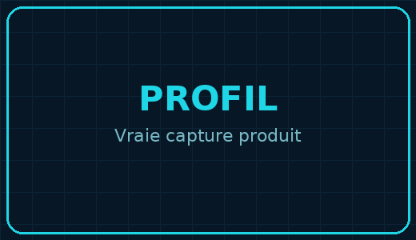
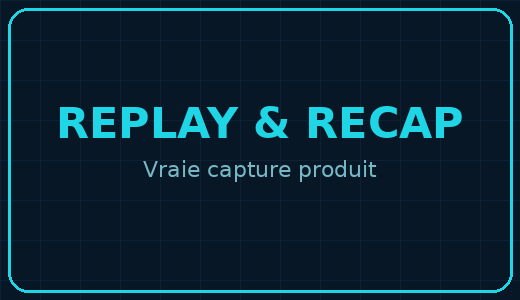
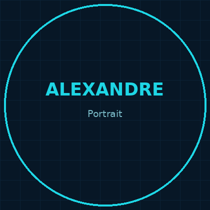

En direct
Découvrir une activité pendant qu’elle se déroule, avec sa spontanéité et ses imprévus.

Entrer dans un Live et passer simplement d’une expérience à une autre.

Explorer les activités en direct à travers le monde et découvrir des Lives que l’on n’aurait pas trouvés par recherche.

Découvrir des activités.

Retrouver les créateurs.

Revoir certaines expériences.

Voir le matériel réellement utilisé pendant l’activité.

Préparer, cadrer, démarrer simplement.
Les informations sur le créateur, le lieu et l’activité restent accessibles sans prendre le dessus sur le Live.

Conception produit, développement du MVP, infrastructure Live, formation en informatique, expérience dans la musique, la création et l’enseignement.

Positionnement, stratégie, modèle économique, partenariats et expérience senior en marketing, notamment chez Leboncoin.
Rendre observables les gestes, pratiques et environnements réels.
Découvrir des pratiques et des personnes dans d’autres territoires.
Donner de la visibilité à des lieux, initiatives et acteurs locaux.
Faire se découvrir des personnes autour d’une passion ou d’une pratique commune.